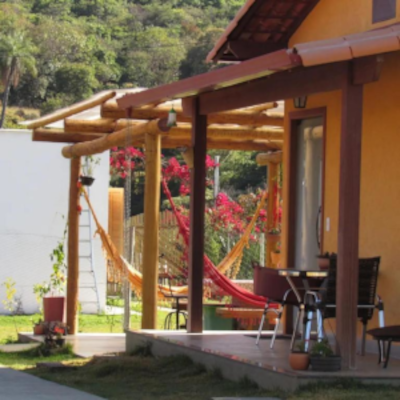

Pousada Quatro Estações
Lindos chalés e uma experiência inesquecível no coração da Serra do Cipó!
🌄 Pousada na Serra do Cipó – Conforto, Natureza e Hospitalidade no Coração da Serra
Se você procura descanso, natureza e praticidade, a nossa pousada na região central da Serra do Cipó é o destino ideal! Aqui, unimos o conforto dos chalés completos com o charme e a tranquilidade que só a Serra oferece.

Espaços de convivência e chalés super confortáveis
Na imagem, Chalé Outono e Pergolado com redes para descanso
🏡 Chalés Confortáveis e Equipados
Nossos chalés suíte de 25m² acomodam até 4 hóspedes e foram planejados para garantir o máximo de conforto durante sua estadia. Cada chalé conta com:
🛏️ Cama de casal Queen, cama de solteiro e cama auxiliar❄️ Ar-condicionado
📺 TV com streaming
🧊 Frigobar
🚿 Banheiro privativo e enxoval completo
Tudo o que você precisa para relaxar depois de um dia de passeio pela Serra do Cipó.
🌿 Área de Lazer e Convivência
Aproveite momentos inesquecíveis na nossa área externa:
🏊♀️ Piscina aquecida com vista panorâmica para a serra😎 Pergolado com redes para descanso
🍳 Cozinha compartilhada totalmente equipada
🚗 Estacionamento gratuito
📶 Wi-Fi livre em toda a pousada
Um espaço pensado para quem busca conforto, contato com a natureza e boas memórias.
☕ Café da Manhã Incluso
Comece o dia com um delicioso café da manhã incluso na diária, preparado com ingredientes frescos e regionais — perfeito para recarregar as energias antes das trilhas e cachoeiras!